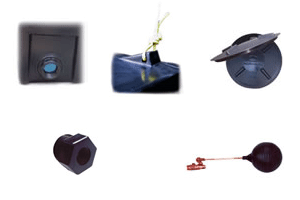
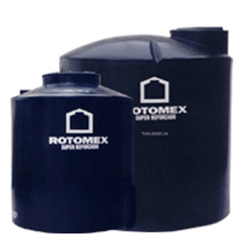
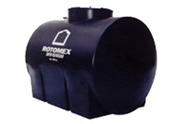
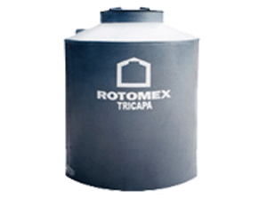
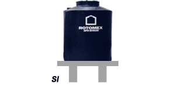
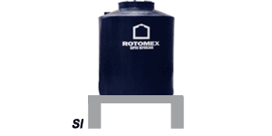
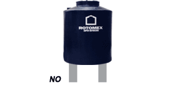

ROTOMEX®
Tinacos verticales color negro, beige y plata y tipo horizontales
Teléfonos: (55) 5824-1025, (55) 5824-1018 y (55) 5824-1414 e-mail: ventas@rotomex.com

Los tinacos ROTOMEX® están fabricados con resina de polietileno lineal de alta calidad, aprobada para envase de alimentos.
Su capa exterior negra cuenta con protección contra rayos ultravioleta que inhibe la formación de microorganismos y aumenta la duración del tinaco.
Su capa interior espumada color azul claro le permite apreciar la claridad del agua y da soporte y fuerza a las paredes del tinaco.
Dimensiones y Capacidades:
| Modelo |
Capacidad en litros |
Dimensiones en centímetros |
|
|---|---|---|---|
| Diámetro | Altura | ||
| TVN-450 | 450 | 81 | 102 |
| TVN-600 | 600 | 91 | 108.5 |
| TVN-750 | 750 | 99 | 118 |
| TVN-1100 | 1,100 | 112 | 132 |
| TVN-2500 | 2,500 | 152 | 163 |
| TVN-5000 | 5,000 | 185 | 220 |
| Modelo |
Capacidad en litros |
Dimensiones en centímetros |
||
|---|---|---|---|---|
| Ancho | Largo | Alto | ||
| THN-700 | 700 | 90 | 136 | 96 |
| THN-1000 | 1,000 | 106 | 145 | 101 |
Los tinacos vienen equipados con:
Conexión de salida de 1 1/2'' super reforzada, soporte de amarre y tapa roscada.
Línea de tinacos verticales (TVN)
Tinaco vertical con capa sólida, exterior en color negro e interior azul espumado. En los tinacos de 2,500 y 5,000 funcional tapa descentrada.
Línea de tinacos horizontales (THN)
Tinaco horizontal con capa sólida exterior negra e interior azul espumado.
Línea tinacos tricapa plata (TTP)
Tinaco tricapa plata capa exterior plata, intermedia negra e interior azul, más estético y mayor resistencia.
Recomendaciones de instalación:
- Maniobre su tinaco con cuidado y no lo arrastre sobre objetos que lo puedan perforar
- Apriete manualmente la conexión del tinaco
- Instálelo sobre una superficie limpia y plana bien apoyado o en una base de concreto
Francisco Barrera 11B, Col. Cristóbal Higuera, Atizapán de Zaragoza, C.P. 52400, Estado de México
Teléfonos: (55) 5824-1025, (55) 5824-1018 y (55) 5824-1414 e-mail: ventas@rotomex.com
Horario atención: LU-VI 9:00 AM a 5:45 PM